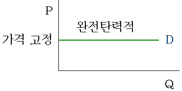
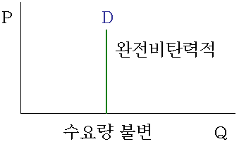

①
수요의 가격탄력성이
| 완전탄력적이면 |
수요량의 변화와는 상관없이
| 가격이 고정된다. |

②
③
|
수요의 가격탄력성 = 수요량변화율 / 가격변화율 |
|
●수요의 가격탄력성이 '0'에 가까울수록 비탄력적이고 ●수요량변화율이 가격변화율보다 작을수록 가격탄력성은 '0'에 가까워진다. |
따라서, 수요의 가격탄력성이 비탄력적이면
| 가격의 변화율보다 수요량의 변화율이 더 작다. |
④
수요의 가격탄력성
| = 수요량변화율 / 가격변화율 |
수요곡선이 수직선이면
|
●수요량변화율이 '0'이 되서 ●가격탄력성도 '0'이 된다. |
가격탄력성이 '0'이라는 것은
|
●탄력이 전혀 없다는 의미이므로 ●가격탄력성은 완전비탄력적이 된다. |

⑤
공급의 가격탄력성
| = 공급량변화율 / 가격변화율 |
공급의 가격탄력성이 1보다 커야 탄력적이므로
| 그러기 위해서는 공급량변화율이 가격변화율보다 커야 한다. |
따라서, 공급의 가격탄력성이 탄력적이면
| 가격의 변화율보다 공급량의 변화율이 더 크다. |